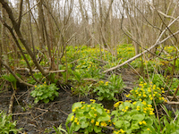
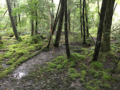
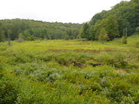
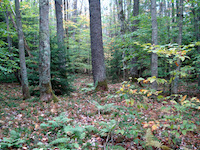
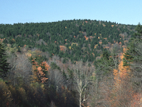
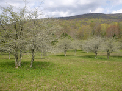

Vegetation Types
Open Bog
The unforested areas of particular interest in the Glades valley may be referred to simply as "open bog." Four such bogs are recognized (and named) and are dominated by various sedges (Cyperaceae), swamp dewberry (Rubus hispidus), two species of cranberry (Vaccinium oxycoccos and V. macrocarpon), several species of low woody shrubs, and several species of mosses (particularly Sphagnum and Polytrichum). Red spruce (Picea rubens) also grows as scattered individual trees or in clumps. The soil consists of deep layers of acidic, water-saturated "peat," or partially decomposed plant material that has accumulated here for over 10,000 years. In part because of these conditions, several rare or unusual plant species occur in the open bogs. The white/brownish tufts shown here are the flowering heads of cottongrass (Eriophorum virginicum), which become apparent in the fall.
Alder Thicket
Areas around the edges of open bogs or nearby streams are commonly occupied by a tall shrub layer of speckled alder (Alnus incana ssp. rugosa) and wild raisin (Viburnum nudum var. cassinoides). Herbaceous species include skunk cabbage (Symplocarpus foetidus) and marsh marigold (Caltha palustris var. palustris -- the yellow flowers shown here in early spring). The soil here is usually deep, saturated inorganic material (silts and clays), often with standing water at the surface. This dense, almost impenetrable vegetation is home to many species of rare plants and a variety of birds.
Bog Forest
Parts of the floodplain of the Glades valley are occupied by "bog forest," a complex mixture of red spruce (Picea rubens), eastern hemlock (Tsuga canadensis), yellow birch (Betula alleghaniensis var. alleghaniensis), and other tree species. Numerous woody shrub and herb species also occur here (many of them rare), and the bog forest is among the most botanically rich habitats in the valley in spite of its relatively small total area. Like the alder thickets, the soils here are deep and saturated with water. Root masses, fallen logs, and old tree stumps combine with wet areas to create a great variety of microhabitats for many species.
Wet Meadows
Low-lying areas near streams that have experienced past disturbances (either natural or human-caused) often develop dense herbaceous vegetation supporting several species of sedges (Cyperaceae), rushes (Juncaceae), grasses (Poaceae), and other grass-like plants, as well as a stunning array of tall wildflowers and vines. Beavers (Castor canadensis) often abandon their ponds, allowing the dams to fall into disrepair and the ponds to drain. The wet areas remaining then develop a diverse array of wetland plants. Areas cleared by humans in the past can develop similar vegetation. In this particular case, both factors are involved. This is the site of the former Mill Point Federal Prison Camp (see History), which has become home to a shifting set of beaver ponds.
Northern Hardwoods Forest
Upland areas in the Glades valley are occupied primarily by broadleaf deciduous forest. Because many of the tree species here have their main geographic distribution much further north, this type of vegetation is frequently called the "northern hardwoods" forest. Common trees here include sugar maple (Acer saccharum var. saccharum), red maple (Acer rubrum), yellow birch (Betula alleghaniensis var. alleghaniensis), American beech (Fagus grandifolia), black cherry (Prunus serotina), northern red oak (Quercus rubra), Fraser magnolia (Magnolia fraseri), and many others. Some eastern hemlock (Tsuga canadensis) and red spruce (Picea rubens) also occur here, especially in moist ravines. Many of the herb species are "spring ephemerals," those which flower in late April through early June before the canopy foliage fully develops. More persistent herbs include the shield or wood ferns (Dryopteris spp.), New York fern (Thelypteris novaboracensis), and various clubmosses (Lycopodium spp. and Huperzia lucidula).
Spruce Forest
In a few areas along the higher ridges surrounding the valley, nearly pure stands of red spruce (Picea rubens) occur. Spruce is also common in moist ravines and in the open bogs. In the higher forests, spruce may compose up to 80% of trees, casting a perpetual shade that inhibits the growth of shrubs and herbs. The cool moist conditions favor a dense ground layer of the "lobster tail liverwort" (Bazzania trilobata), a small moss-like plant. While little spruce forest grows within the watershed of the Glades, extensive stands of spruce occur along the nearby Highland Scenic Highway over Black Mountain to the north.
Old Fields, Roadsides, and Disturbed Areas
Areas affected by past or ongoing human disturbance are common in the valley, and all support a diverse array of herbs and shrubs. Some of these areas are slowly becoming overgrown with native trees, such as this formerly grazed area being occupied by species of hawthorn (Crataegus sp.). Many disturbance-oriented species are native to the area, such as wrinkled-leaf goldenrod (Solidago rugosa) which frequently covers large areas of open ground. However, numerous non-native species have also become established. Many of these species are also widespread along roadsides, in abandoned farm fields, and in suburban lawns across the eastern United States, such as spotted knapweed (Centaurea biebersteinii), crown vetch (Coronilla varia), orchard grass (Dactylis glomerata ssp. glomerata), viper's bugloss (Echium vulgare), ox-eye daisy (Leucanthemum vulgare), yellow sweetclover (Melilotus officinalis), plaintains (Plantago spp.), heal-all (Prunella vulgaris), red clover (Trifolium pratense), and coltsfoot (Tussilago farfara). Many of these plants were introduced unintentionally from other parts of North America, Europe, or eastern Asia, but a few were introduced deliberately. In the Glades area, most of these species have not yet spread beyond the disturbed areas, but a few have become well-established and have the potential to become serious pests and adversely affect the delicate vegetation of the wetlands.

{kind=link}
{kind=link}
{kind=link}
{kind=link}
{kind=link}
{kind=link}
{kind=link}
{kind=link}
{kind=link}